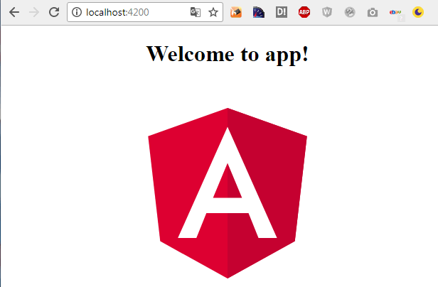

Angular 4
Schnelleinstieg

Was ist Angular 4?
Angular 4 ist ein Open Source JS-Framework für die Erstellung von SPAs
- Veröffentlicht im März 2017 (Angular 4)
- Aktuelle Version 5 veröffentlicht am 23.10.2017
- powered by Google
- Wird sowohl in Web- als auch in plattformübergreifenden Desktop-Anwendungen verwendet.
Wie geht es los?
Zunächst ist einiges zu installieren, um mit Angular zu beginnen.
Angular CLI
Mittels der Angular CLI kann man einfach ein Projekt erstellen und sehr viele Arbeitsschritte vereinfachen.
Installiert wird sie einfach mit dem gerade installierten Paketmanager.
npm install -g @angular/cliTypescript
TS ist ein Superset von Javascript. Also Javascript + Typisierung + Klassen + Vererbung + Interfaces + Tooling... powered by Microsoft
Wenn nicht ohnehin schon installiert, kann man es mit npm installieren.
npm install -g typescriptUnd wie geht es weiter?
Dank Angular CLI ist es recht trivial ein neues Projekt zu erstellen.
ng new <projektname>
Damit ist das Hello World der Angular 4 Welt auch schon fertig.
Zur Kontrolle kann man schon einmal den Node.js Webserver starten um sich sein Hello World anzusehen. Dazu einfach in den Ordner wechseln und den Server starten mittels.
ng serve
Gleich zu Beginn erscheint in der Bash:
** NG Live Development Server is listening on localhost:4200, ... **
Et voilá: Hat alles geklappt, sieht das Ergebnis an Port 4200 etwa wie folgt aus.

Was nun weiter?
Jetzt kann man die entstandenen Konfigurationsdateien anpassen. Zum Beispiel den Host oder den Port in der .angular.cli.json
"defaults": {
"serve": {
"port": 4444,
"host": "127.0.0.1"
}Oder man ändert in der tslint.json die Validierungregeln für den Linter.
Eigentlich werden Components in kebab-case geschrieben und beginnen mit app.
"component-selector": [
true,
"element",
"app",
"kebab-case"
]Oder man ändert in der tsconfig.json die Javascript-Ziel version, wenn man keinen IE 9 mehr unterstützen muss.
"compileOnSave": false,
"compilerOptions": {
"outDir": "./dist/out-tsc",
"sourceMap": true,
"declaration": false,
"moduleResolution": "node",
"emitDecoratorMetadata": true,
"experimentalDecorators": true,
"target": "es5", // oder z.B. es6JS vs. Typescript?
Typescript ist Javascript +
- Type annotations
- Arrow functions
- Interfaces
- Classes
- Constructors
- Access modifiers
- Properties
- Modules
Type annotations
// Javascript:
var a = 5;
a = true;
a = 'cool'
// alles super und knallt erst irgendwann irgendwo zur Runtime
// Typescript:
let a: number = 5; // number|boolean|string|any|number[] = [1, 2]...
// Der Typ wird auch ohne Annotation gesetzt,
// wenn gleich eine Zuweisung erfolgt.
a = true // -> compiler error zur Design-Time
enum Color {Red = 0, Green = 1, Blue = 2};
let backgroundColor = Color.Red; // Intellisense löst das Enum auf.
Arrow functions
// Javascript:
var writeLogJS = function(param){
console.log(param);
}
writeLogJS('text');
//Typescript:
let writeLogTS = (param) => console.log(param);
writeLogTS('text');
interface ICircle {
x: number;
y: number;
r: number;
}
let drawCircle(circle: ICircle){
// ...
}
drawCircle({
x: 5,
y: 5,
r: 3
})
Classes
class Circle {
x: number;
y: number;
r: number;
draw(){
console.log('X: ' + this.x + ', Y: ' + this.y)
}
}
let circle = new Circle();
circle.x = 5;
circle.y = 5;
circle.r = 3;
circle.draw();
Constructors
class Circle {
x: number;
y: number;
r: number;
constructor(x: number, y: number, r: number) {
this.x = x;
this.y = y;
this.r = r;
}
}
let circle = new Circle(5, 5, 3);
Access modifiers
class Circle {
constructor(private x: number, public y: number, protected r: number) {
// private -> nur in der Klasse sichtbar
// protected -> nur in der Klasse und davon abgeleiteten Klassen sichtbar
// public (default) -> überall sichtbar
}
public draw(){
// ...
}
}
let circle = new Circle(5, 5, 3);
// circle.x -> Compiler error
// circle.y -> alles gut
// circle.draw() -> alles gut
Properties
class Circle {
constructor(private _x: number, private _y: number, private _r: number) {
}
get x(){ return this._x; }
set x(value: number){
if(value < 0)
throw new Exception('so nicht, Freunde der Sonne');
this._x = value;
}
let circle = new Circle(5, 5, 3);
// circle.x = 7 -> alles gut
// circle.x = -5 -> Exception: so nicht, Freunde der Sonne
Modules
// main.ts
import { Circle } from './circle' // ohne .ts
let circle = new Circle();
// circle.ts (im selben Ordner)
export class Circle { // Schlüsselwort export
// ...
}
Angular Grundlagen
Angular besteht hauptsächlich aus
- Components
- Templates
- Directives
- Services
Components...
... beinhalten das Markup, die Logik und die Daten für einen Webpart.
... müssen in einem Module registriert werden.
... erkennt man am @Component() - Decorator.
... stehen im Template anderer Komponenten.
... lassen sich mit der Angular CLI erstellen.
ng g c './my-compoment [ -is (inline styles) -it (inline template)]
Beispiel einer Component:
@Component({ // Decorator mit Meta-Daten
selector: 'my-component', // -> Hallo {{Person?.Name}}
', // einzeilig mit 'Elvis' Operator
// ODER:
template: `
Hallo {{Person?.Name}}
`, // mehrzeilig
// ODER:
templateUrl: './my-component.html'
styles:[ 'h1 {font-size:1.5em}', 'h2 {font-size:1.2em}' ],
// ODER:
styleUrls:['./styles.css', './custom.css'],
})
export class MyComponent {}
Bindings
Bei Bindings unterscheidet man:
- Property Binding
- Event Binding
- Two-Way Binding
[Property Bindings]:
Property Bindings werden in [] gesetzt und verweisen auf eine Property der Component oder ein Literal.
Die Daten fließen aus der Komponente in die View und die Aktualisierung erfolgt automatisch.
Link // GoToLink ist eine Property der Component
Link // Literal
(Event Bindings):
Event Bindings werden in () gesetzt und verweisen auf eine Methode in der Component.
Das Event fließt in die Component und ruft dort eine Methode auf.
Die Events sind nicht auf die nativen Events eines DOM-Elements beschränkt, sondern können in der Component definiert werden.
// OnButtonClick ist eine Methode der Component
[(Two-Way Bindings)]:
Neben 'lesenden' und 'schreibenden' unidirektionalen Bindings gibt es noch die bidirektionalen Bindings.
Kleine Eselsbrücke: 'Das Runde muss ins Eckige'.
Ist das Binding so deklariert, können die Werte aus der Component heraus als auch aufseiten der UI geändert werden.
// FirstName ist eine Property der Component
Templates
Die Templates werden in HTML geschrieben und angereicht mit Directives und Interpolations.
Directives
Es gibt 2 verschiedene Arten von Direktiven
- Strukturdirektiven (verändern das DOM der Website und beginnen mit einem *)
- Attributdirektiven (verändern das Verhalten eines DOM-Elements)
ng g directive redColored
Strukturdirektive in der Anwendung
...
{{item}}
trifft zu
eher nicht
Aufbau einer Attributdirektive
import { Directive, ElementRef, HostListener } from '@angular/core';
@Directive({
selector: '[redColored]'
})
export class HighlightDirective {
constructor(private el: ElementRef) {
this.el.nativeElement.style.backgroundColor = 'red';
}
@HostListener('click') doSomething() {
alert ('click');
}
}
// Einsatz:
<h1 redColored> rote Headline </h1>
Services
Components kümmern sich nur um die Anzeigelogik, während Services dafür zuständig sind, die Daten zu liefern oder zu verarbeiten
ng g service books
Aufbau eines Services
import { Book } from './shared/book';
import { Thumbnail } from './shared/thumbnail';
export class BooksService {
getBooks(){
return [
new Book(
'9783864903571',
'Angular',
['Johannes Hoppe', 'Danny Koppenhagen', 'Ferdinand Malcher', 'Gregor Woiwode'],
new Date(2017, 3, 1),
'Grundlagen, fortgeschrittene Techniken und Best Practices mit TypeScript',
5,
[new Thumbnail('https://ng-buch.de/cover2.jpg', 'Buchcover')],
'Mit Angular setzen Sie auf ein modernes und modulares...'
)
];
}
constructor() { }
}
Einbau eines Services
Der Service ist eine Klasse ohne besonderen Decorator. Damit er einbaubar ist, muss er als Provider dem Modul bekannt gemacht und per Contructor-Injection der Component mitgegeben werden.
// app.module.ts
...
providers: [BooksService],
bootstrap: [AppComponent]
})
..
// book-list.component.ts
constructor(bookService: BooksService){
this.books = bookService.getBooks();
}
... probieren wir die DEMO!
GitHubGitHub